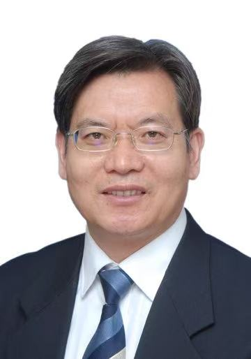
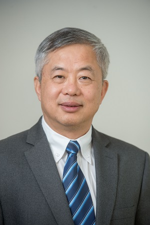
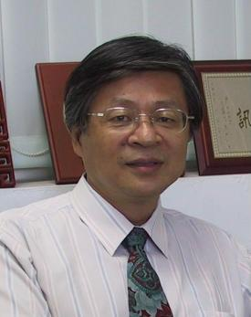
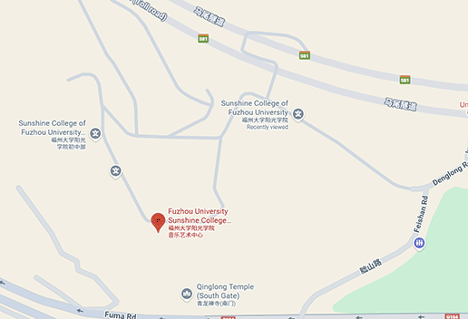
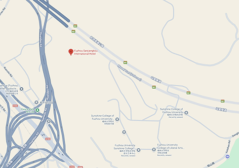
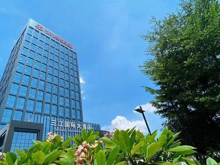

Introduction
It is our greatest pleasure to welcome you to the 22nd International Conference on Intelligent Information Hiding and Multimedia Signal Processing (IIHMSP 2026), hosted by Yango University, Fuzhou, China. The conference will be held from October 23, 2026 to October 26, 2026 at the Yango University, Fuzhou, China. Multimedia technologies facilitate the creation of global information infrastructure for acquiring, storing, and communicating data in different forms. The proliferation of multimedia applications raises challenges such as multimedia security and privacy, big data in multimedia, and intelligence in multimedia processing. This conference was established in Melbourne, Australia in 2005 (paper series Springer) and was subsequently held in the following locations from 2006 to 2025:
Pasadena, USA (2006 NASA, USA, included in IEEE) ⮕ Kaohsiung, Taiwan (2007 National Kaohsiung University of Applied Sciences, included in IEEE) ⮕ Harbin, China (2008 Harbin Institute of Technology, included in IEEE) ⮕ Kyoto, Japan (2009 Ritsumeikan University, included in IEEE) ⮕ Darmstadt, Germany (2010 Darmstadt University of Technology, included in IEEE) ⮕ Dalian, China (2011 Darlian University of Technology, included in IEEE) ⮕ Athens, Greece ( 2012 University of Piraeus, included in IEEE) ⮕ Beijing, China (2013 Beijing University of Technology, included in IEEE) ⮕ Kitakyushu, Japan (2014 Waseda University, included in IEEE) ⮕ Adelaide, Australia (2015 University of South Australia, included in IEEE) ⮕ Kaohsiung, Taiwan (2016 Kaohsiung University of Applied Sciences, included in IEEE) ⮕ Matsue, Japan (2017 Waseda University, included in Springer) ⮕ Sendai, Japan (2018 Tohoku University, included in Springer) ⮕ Jilin, China (2019 Northeast Electric Power University, included in Springer) ⮕ HoChiMinh, Vietnam (2020 Ton Duc Thang University, included in Springer) ⮕ Kaohsiung, Taiwan (2021 Shude University of Science and Technology, included in Springer) ⮕ Kitakyushu, Japan (2022 Waseda University, on-line, included in Springer) ⮕ Daegu, South Korea (2023 Kyungpook National University, included in Springer) ⮕ Matsue, Japan (2024 Shimonoseki City University, included in Springer) ⮕ Taichung, Taiwan(2025 Chaoyang University of Technology, included in Springer).
IIHMSP 2026 (The 22nd International Conference on Intelligent Information Hiding and Multimedia Signal Processing) provides a forum for researchers, engineers, and scientists to discuss information hiding, multimedia signal processing, the application of artificial intelligence in multimedia and signal processing, and information technology to exchange latest research outcomes.
Again, it is our great pleasure to have you with us at the conference, where we hope you can enjoy all the events we prepare and have a fruitful discussion here. Hope you have a wonderful and stimulating stay in this city, Fuzhou.
Contact Information:
For queries related to the paper status and program, please contact:
academicmeta@ygu.edu.cn
For questions related to registration, local information, and services, please contact:
academicmeta@ygu.edu.cn
The Microsoft CMT service was used for managing the peer-reviewing process for this conference. This service was provided for free by Microsoft and they bore all expenses, including costs for Azure cloud services as well as for software development and support.
Call for Paper
The 22nd International Conference on Intelligent Information Hiding and Multimedia Signal Processing (IIHMSP 2026) will be hosted by Yango University, Fuzhou, Fujian, China on October 24-26, 2026.
The conference provides a forum for researchers, engineers, and scientists to discuss information hiding, multimedia signal processing, the application of artificial intelligence in multi-media and signal processing, and information technology to exchange the latest research outcomes. Multimedia technologies facilitate the creation of global information infrastructure for acquiring, storing, and communicating data in different forms. The proliferation of multimedia applications raises challenges such as multimedia security and privacy, big data in multimedia, and intelligence in multimedia processing.
This conference was established in Melbourne, Australia in 2005 and was subsequently held in USA, Taiwan, Germany, China, Greece, Australia, Vietnam, Korea, and Japan from 2006 to 2025.
The conference will feature keynote speeches delivered by four distinguished experts including Professor Yao Zhao (Yangtze Scholar and Vice President of Taiyuan University of Science and Technology), Professor Changwen Chen (IEEE Fellow from The Hong Kong Polytechnic University), Professor Chun‑Fa Wang (IEEE Fellow and President of National Cheng Kung University), and Professor Ce Zhu (Yangtze Scholar, Dean of the University of Electronic Science and Technology of China–Glasgow College, IEEE Fellow, who will present on October 24th), along with technical paper presentations, poster sessions, and interactive panel discussions, offering attendees the opportunity to exchange ideas, showcase innovations, and build future collaborations.
Topics of IIHMSP 2026 interest include, but are not limited to, the following:
- Watermarking: techniques, attacks, protocols, applications
- Steganography and steganalysis: techniques, protocols, applications
- Cryptography and cryptanalysis: techniques, protocols, applications
- Data authentication issues and access control themes
- Broadcast and public key encryption
- Forensic analysis and tracing traitors
- Digital rights management and legal aspect
- RFID security and home network privacy
- Platform integrity and trusted computing
- Systems engineering and development for information hiding & security
- ASIC/FPGA/GPGPU design and implementation for information hiding & security
- Enabling technologies and emerging standards for information hiding & security
- Multimedia sensing and sensory systems
- Multimedia source coding and channel coding
- Multimedia signal analysis and visualization
- Multimedia signal mining and data fusion
- Wired and wireless Multimedia networking and communication techniques
- Multimedia/multimodal signal interpretation and automatic recognition
- Multimedia databases and retrievals
- Multimedia hyperlink techniques and applications
- Advances in multimedia content description interfaces
- Multimedia big data
- Systems engineering and development for multimedia systems
- Enabling technologies and emerging standards for multimedia systems
- Artificial neural networks for multimedia processing: models, learning paradigms, architectures, and implementations
- Fuzzy systems and evolutionary computing for intelligent multimedia processing
- Human machine multimodal interaction: e.g., face/speech recognition, facial expression and emotion categorization, gesture analysis and recognition, etc.
- Artificial intelligence, computer vision, deep learning, and big data technology
- Cloud computing, edge computing, and AIoT technology
- All other computer science fields: e.g., computer algorithm, data mining, graph algorithms, computer architecture, the other computer related areas, etc.
About Paper Submission
- papers should be submitted electronically in PDF versions of your paper through the Paper Submission System.
- The IIHMSP 2026 accepts two types of submissions (regular and one-page) for review. These types of papers need to be submitted in Springer conference paper format, as shown in IIHMSP 2026 Proceeding Templates below, and should be written in English. And they will be included in the conference proceeding.
- Manuscript should be unpublished work, must include enough detail about the goal, the problem to solve, proposed methods and main results.
Paper Types
- All submitted papers should be written according to the following MS-Word or Latex template and should be 10 to 12 pages in length. In addition, the similarity of the submission paper must be less than 20% according to Springer’s recommended rule.
- In order to provide more incentives for paper submissions, authors can have an option to select whether they want their papers to be included in Springer conference book.
- The layout of Springer conference papers is much smaller than that of IEEE conference papers. Therefore, the conference requires 10-12 pages of papers, which is approximately equivalent to 5-6 pages of IEEE conference paper format. Please refer to the following template for relevant samples.
Regular Paper
- This category is provided for authors who want to present a timely review of research, a case study and so on. One of the authors of an accepted “One-page Presentation-only Paper” is responsible for oral or online presentation in the conference. The accepted papers will be ONLY included in the conference proceeding, and they are NOT included in Springer Digital Library and other indexes (EI/Scopus).
One-page Presentation-only Paper
- The MS Word Template (in A4 size and the Springer format) can be downloaded here (MS Word Template) or linked to https://www.springer.com/gp/computer-science/lncs/conference-proceedings-guidelines?srsltid=AfmBOoridfDNO9TTSjAzjeGQ08uQe5x3M0YYBFtZsnide1V8n1TVD_q4
- The Latex Template (in A4 size and the Springer format) can be downloaded here (Latex Template) or linked to https://www.springer.com/gp/computer-science/lncs/conference-proceedings-guidelines?srsltid=AfmBOoridfDNO9TTSjAzjeGQ08uQe5x3M0YYBFtZsnide1V8n1TVD_q4
IIHMSP 2026 Paper Templates
Special Session Submission
这里预留 special session 说明和表格。
Important Dates
| Deadline for special session proposal | Aug. 31, 2026 |
|---|---|
| Deadline for paper submission | Aug. 31, 2026 |
| Submission of final camera-ready papers | October 15, 2026 |
| Conference dates | October 24-26, 2026 |
Camera-Ready Paper and Copyright-Form Submission
The attached guidelines are provided to assist the authors in the preparation and submission of your final paper and copyright form for the IIHMSP 2026 conference. Please carefully prepare your camera-ready paper and copyright form by following the steps outlined in the guidelines. Please note that there are two categories of submissions for IIHMSP 2026: regular papers (to be submitted to Springer for possible publication) and one-page papers (for presentation at the conference only). The following are the camera-ready submission guidelines for the two categories, along with a blank copyright form:
- Regular paper (would like to submit to Springer book series): Download guidelines (here) and blank Copyright (Licence to Publish) Form (here). Submit here (CMT system).
- One-page paper (NOT submit to Springer book series: Download guidelines (here) and blank Copyright Form (here). Submit here (CMT system).
CONFERENCE REGISTRATION
For overseas authors and participants, please complete the registration and payment according to the following methods. At least one author of each accepted paper must register and pay the fee before October 23, 2026.
The registration fee is $500(￥3500 RMB) per paper, and each paper must be at least 10 pages in length but not exceed 12 pages. If the paper exceeds 12 pages, an additional fee of US$50 will be charged for each additional page, with a maximum of 14 pages per paper.
Each paper registration fee allows only one author to attend the conference. If two or more authors of a paper attend the conference, you need to pay extra $250 for each author. For non-paper attendees, the registration fee for each person is $250 (please be sure to make payment in advance).
The registration fee covers the conference proceedings, conference program guide, attendance at all technical sessions, lunches and Dinners, coffee breaks, conference gifts. Traveling and lodging fees are not included.
The methods of registration payment:
Telegraphic Transfer:
Please pay your registration fee by wire transfer to the following account:
Beneficiary's name: ZHOU XIUCHENG
Account Number: 6217 8508 0001 1136 742
Beneficiary's Bank: BANK OF CHINA，SHANGHAI BR.
Beneficiary's Bank Address: 200 Mid Yincheng Road, Pudong Area, Shanghai, China
SWIFT Code: BKCHCNBJ300
Organizing Committee
Jeng-Shyang Pan, Nanjing University of Information Science and Technology, China
Lakhmi C. Jain, University of Piraeus, Greece
Vaclav Snasel,VSB-Technical University of Ostrava, Czech Republic
Jeng-Shyang Pan, Nanjing University of Information Science and Technology, China
Lakhmi C. Jain, University of Piraeus, Greece
Xinhua Jiang, Yango University, China
Junzo Watada, Waseda University and Shimonoseki City University,Japan
Dewang Chen, Fujian University of Technology, China
Xinyu Da, Yango University, China
Zhengyu Meng, Fujian University of Technology, China
Lingping Kong, VSB-Technical University of Ostrava, Czech Republic
Tien-Wen Sung,Fujian University of Technology, China
Pei Hu, Nanyang Institute of Technology, China
Shu-Chuan Chu, Nanjing University of Information Science and Technology, China
Pei Hu, Nanyang Institute of Technology, China
Xingsi Xue, Fujian University of Technology, China
Shih-Pang Tseng, Changzhou College of Information Technology, China
Lingda Chi, Yango University, China
Chengli Luo, Yango University, China
Zhengyu Meng, Fujian University of Technology, China
Maoying Yuan, Yango University, China
Yango University
No.99,Denglong Road, Economic and TechnologicalDevelopment Zones, Fuzhou City, Fujian Province, China
Conference Program
这里预留日程表、分会场安排和在线会议链接。
Keynote Speakers

- Prof. Yao Zhao, Changjiang (Yangtze River) Distinguished Professor, Vice President of Taiyuan University of Science and Technology (TYUST), IEEE Fellow. (October 24)
- Speech Title: Generalised AI-Generated Image Detection: Challenges and Advances
- Abstract: The rapid advancements in generative AI have significantly impacted digital forensics and security, enabling the creation of highly realistic synthetic images that closely resemble authentic visuals. While these innovations present transformative opportunities for creative industries, they also introduce substantial challenges in detecting AI-generated content and preventing its misuse in misinformation campaigns and fraudulent activities. In this talk, we will highlight our recent efforts to advance AI-generated image detection, focusing on improving detection accuracy and enhancing generalisation across a range of generation methods. We will also explore the development of explainable AI-driven solutions, underscoring the urgent need for robust, scalable, and interpretable approaches to mitigate the growing threats posed by AI-generated content.
- Biography: Dr Yao Zhao is a professor at Beijing Jiaotong University, the academic vice president of Taiyuan University of Science and Technology, a distinguished professor of the Yangtze River Scholar Program, a recipient of the National Science Fund for Distinguished Young Scholars, and an IEEE Fellow. He currently serves as the director of the "Science Fiction Audio and Video Intelligent Processing" Beijing Key Laboratory. His research areas include image/video compression, digital media content security, media content analysis and understanding, artificial intelligence, etc. He has presided over more than 30 projects, including the New Generation Artificial Intelligence Project and the 973 Program. He has published more than 300 papers in domestic and international journals and conferences. As the first contributor, he has won 5 provincial and ministerial awards and 1 Leading Technology Award at the World Internet Conference.

- Prof. Chang Wen Chen, Chair Professor of Visual Computing at The Hong Kong Polytechnic University, IEEE Fellow. (October 24)
- Speech Title: AI Generated Visual Art Contents: From Creation to Aesthetics Reasoning
- Abstract: The rapid progress of generative art has democratized the creation of visually pleasing artistic contents. However, achieving genuine artistic impact, a nature that can resonate with viewers on a deeper, more meaningful level, requires a sophisticated aesthetic sensibility. This sensibility involves a multi-faceted reasoning process that extends beyond simple visual appeal, has often been overlooked by current computational models. This talk presents a summary of the status in AI generated visual art contents and an initial endeavor to capture such a complex process by investigating how the reasoning capability of Multimodal LLMs (MLLMs) can be effectively elicited for aesthetic judgment. Our recent research reveals a critical challenge: MLLMs exhibit a tendency towards hallucinations during aesthetic reasoning, characterized by subjective opinions and unsubstantiated artistic interpretations. We shall demonstrate that these limitations can be overcome by employing an evidence-based, objective reasoning process, as substantiated by the proposed baseline algorithm, ArtCoT. MLLMs prompted by this principle produce multi-faceted and in-depth aesthetic reasoning that aligns significantly better with human judgment. These findings have direct applications in areas such as AI art tutoring and as reward models for generative art. We hope the proposed aesthetics reasoning framework can ultimately pave the way for constructing AI systems that can truly understand, appreciate, and contribute to artistic pieces just like the human aesthetic judgment.
-
Biography:
Chang Wen Chen is currently Chair Professor of Visual Computing at The Hong Kong Polytechnic University. Before his current position, he served as Dean of the School of Science and Engineering at The Chinese University of Hong Kong, Shenzhen, from 2017 to 2020, and concurrently as Deputy Director at Peng Cheng Laboratory from 2018 to 2021. Previously, he was an Empire Innovation Professor at the State University of New York at Buffalo (SUNY) from 2008 to 2021 and the Allan Henry Endowed Chair Professor at the Florida Institute of Technology from 2003 to 2007. He received his BS degree from the University of Science and Technology of China in 1983, an MS degree from the University of Southern California in 1986, and his PhD degree from the University of Illinois at Urbana-Champaign (UIUC) in 1992.
He has served as Editor-in-Chief for IEEE Trans. Multimedia (2014-2016) and for IEEE Trans. Circuits and Systems for Video Technology (2006-2009). He has received many professional achievement awards, including ten (10) Best Paper Awards or Best Student Paper Awards, the prestigious Alexander von Humboldt Award in 2010, the SUNY Chancellor’s Award for Excellence in Scholarship and Creative Activities in 2016, the UIUC ECE Distinguished Alumni Award in 2019, and the ACM SIGMM Outstanding Technical Achievement Award in 2024. He is an IEEE Fellow, a SPIE Fellow, and a Member of Academia Europaea.

- Prof. Jhing-Fa Wang, Chair Professor, National Cheng Kung University, Tainan, Taiwan, IEEE Fellow. (October 24)
- Speech Title: Affordance Vision & Dexterous hand Manipulation for Humanoid Robot
-
Abstract:
While modern Artificial Intelligence excels at virtual tasks, replicating basic human physical
dexterity remains one of robotics' greatest challenges. This speech explores the vital
convergence of two pioneering fields: Affordance Vision and Dexterous Manipulation. Traditional
computer vision focuses on passive object labeling, but affordance vision shifts the paradigm to
action-centric perception—identifying how objects invite physical interaction based on their
geometry. When paired with multi-fingered, dexterous robotic hands, this visual understanding
transforms into precise, real-world control. By examining how spatial AI translates visual
affordances into complex motor torques, this presentation highlights how the tight loop between
seeing and grasping is paving the way for truly autonomous, adaptable physical intelligence in
manufacturing, healthcare, and daily life. The outline of this speech is shown below:
I. Introduction: The Physical Intelligence Gap
II. Part 1: Affordance Vision – Seeing the World Through Actions
III. Part 2: Dexterous Hand Manipulation – The Art of the Grasp
IV. Part 3: The Convergence – From Pixels to Torques
V. Conclusion and Future Aspects> -
Biography:
Jhing-Fa Wang the Chair & Distinguished Professor in the Department of Electrical Engineering, National Cheng Kung University (NCKU). He got his bachelor and master degree from NCKU in Taiwan and Ph. D. from Stevens Institute of Technology USA in 1973, 1979 and 1983 respectively. He was the President in Tajen University in 2012-2020, the formal chair of IEEE Tainan Section in 2005-2009, the Coordinator of Section/Chapter, IEEE Region 10 in 2011-2012 & the Industry Liaison Coordinater of IEEE Region 10 in 2009-2011. He was elected as IEEE Fellow in 1999 for his contribution on: "Hardware and Software Co-design on Speech Signal Processing", He was also the general Chair of ISCAS 2009.
He received Outstanding Research Awards and Outstanding Researcher Award from National Science Council in 1990, 1995, 1997, and 2006 respectively. He also received Outstanding Industrial Awards from ACER and Institute of Information Industry and the Outstanding Professor Award from Chinese Engineer Association, Taiwan in 1991 and 1996 respectively. He also received the culture service award from Ministry of Education, Taiwan in 2008, Distinguished Scholar Award of KT Li from NCKU in 2009, IEEE Tainan Section Best Service Award in 2011, Innovation Education Award in 2013 Seoul International Invention Fair & special award from 2017 Kuwait International Invention Fair. He also receive IEEE Life Fellow in 2019.
Prof. Wang was also invited to give the Keynote Speeches in PACLIC 12 in Singapore, 1998, UWN 2005 in Taipei, WirlessCom 2005 in Hawaii, IIH-MSP 2006 in Pasadena, USA, ISM 2007 in Taichung, PCM 2008 in Tainan, 2011 ICAST in Dalian, China, 2011 ICSPCC in Xi'an, China, Keer 2012 in Penghu, Taiwan, HIS 2017 in Moscow Region, Russia, ICOT 2015 & ICOT 2016 & ICOT 2017 & 2025 in Hong kong & Australia & Singapore & Indonisia respectively. He also served as an associate editor on IEEE Transactions on Neural Network and IEEE Transactions on VLSI System and Editor in Chief on International Journal of Chinese Engineering from 1995 to 2000.
Prof. Wang's research area is mainly on multimedia signal processing including speech signal processing, image processing, AI medicine, VLSI system design and AI robots. Concerning about the publication, he has published about two hundred journal papers on IEEE, SIAM, IEICE, IEE and about three hundreds international conference papers since 1983. Prof. Wang recently has explored the research on Orange Technology. Orange Technology refers to a newly evolved interdisciplinary research area for integration and innovation of health, happiness, and care technologies. The objective of Orange Technology is to bring more health, happiness and warming care to the society
（4）Prof. Ce Zhu, Changjiang (Cheung Kong) Distinguished Professor, Dean of Glasgow College, University of Electronic Science and Technology of China (UESTC), IEEE Fellow. (October 24)
Yango University, China
Technical Committee on Computational Intelligence and Applications, Chinese Association of Automation
School of Metaverse and New Media,Yango University,China
Institute of Industrial Internet Intelligent Control Technology and System in Universities of Fujian Province
Shandong University of Science and Technology
Springer Nature
Best Paper Award
这里预留 best paper award 内容。
Yango University Introduction
Yango University was established in 2001 under the auspices of Fuzhou University, a key institution in China's "Project 211" national initiative. In 2015, the Ministry of Education approved its transition to a private undergraduate institution, followed in 2017 by the Fujian Provincial Department of Education granting it the status of a candidate unit for master's degree cultivation. A series of milestones mark its rapid development: it was designated as a candidate for master's degree conferral by the Fujian Provincial Department of Education in 2017, selected for Fujian's First-Class Applied-Oriented University Development Program in 2022, and approved as a cultivating institution for master's degree conferral in Fujian Province in 2025.
The university operates on a dual-campus model. The main campus is situated in Mawei, Fuzhou, the birthplace of modern technology, education and industry in China, while the Binhai Campus is located in Changle, within the dynamic Fuzhou New Area and the core zone of the Maritime Silk Road. Currently, the university enrolls over 19,000 full-time students.
For over two decades, Yango University has embraced the motto "Resilient, Sincere, and Ever-Progressing," and is committed to cultivating well-rounded, high-quality applied talents. These individuals are characterized by solid academic foundations, strong practical skills, a sense of social responsibility, and an innovative, entrepreneurial spirit. Aligned with the industrial development goals of Fujian Province, the university has evolved into a first-class applied institution, with engineering as its core focus while promoting coordinated development across multiple disciplines.
The university comprises 10 secondary colleges that offer 40 undergraduate programs spanning 8 major fields, including Engineering, Science, Management, Literature, Law, and Arts. Three majors, including Computer Science and Technology, Electronic Information Engineering, and E-Commerce, have been selected as national first-class undergraduate major construction sites. The university has five majors designated as provincial first-class specialty construction programs: Finance, Law, Fine Arts, Civil Engineering, and Business Administration. The university also offers three National and 41 Provincial First-Class Undergraduate Courses, five Provincial-Level Demonstration Projects in Values Education, and has two applied disciplines designated as provincial development projects, with two others as cultivation projects.
The university implements the "Hundred Doctoral Talents" initiative, successfully recruiting 9 national-level talents, including National Distinguished Experts, a Foreign Academician from Russia, recipients of State Council Special Allowance, members of the MOE Teaching Guidance Committee, and MOE New Century Excellent Talents. Over 30 provincial-level talents have also joined the faculty, including those recognized through Fujian's high-level talent categories, Minjiang Education Leaders, and scholars from Fujian's "Hundred Talent Program" for Taiwanese academics. The university currently employs over 1,100 faculty and staff members. Among them, 83.39% hold master's or doctoral degrees, and nearly 50% are "Dual-Qualified" teachers who integrate professional industry experience into their teaching.
Yango University continues to deepen its educational and teaching reforms, earning five Fujian Provincial Teaching Achievement Awards, including one Special Prize, one First Prize, and three Second Prizes. The university has undertaken 52 Fujian Provincial Education and Teaching Reform Research Projects, four New Engineering and New Liberal Arts Research and Reform Practice Projects, and three Fujian "14th Five-Year Plan" Higher Education Textbook Development Programs.
Recognized nationally as a distinctive and exemplary institution for deepening innovation and entrepreneurship education reforms, the university has established two Provincial Modern Industry Colleges, two Provincial Teaching Teams, and 65 industry-academia collaboration projects under the Ministry of Education's Cooperative Education Initiative. By strengthening partnerships with local governments, Yango University has signed strategic cooperation agreements with the Mawei District on maritime culture, the Taijiang District on low-altitude economy talent development, and the Fuzhou New Area on emerging digital industries, providing students with high-quality educational resources and facilities.
As a qualified host institution for the National Natural Science Foundation of China, the university has secured two National Natural Science Foundation projects and 11 National Social Science Foundation projects. It is home to several key research platforms, including the Fujian Provincial Key Laboratory of Spatial Information Perception and Intelligent Processing, the Digital Economy Research Center—a provincial key philosophy and social sciences research base—and the Provincial-Level University Scientific and Technological Innovation Team in Intelligent Information and Perception Technology.
The university's research excellence has been recognized through multiple awards, such as the Fujian Provincial Science and Technology Progress Third Prize, the China Highway and Transportation Society Science and Technology Progress Second Prize, two First Prizes from the China Association of Work Safety, the China Metrology and Testing Society Science and Technology Progress First Prize, the Hunan Provincial Science and Technology Progress First Prize, and the Fujian Provincial Outstanding Social Science Research Achievement Third Prize.
Faculty members at Yango University have earned significant recognition in competitive teaching awards. In the past two consecutive years, they have received two second-place prizes in the National University Teaching Innovation Competition. Additionally, they have been honored with two first prizes, one second prize, and six third prizes in the Fujian Provincial University Teaching Innovation Competition, along with two first prizes, eight second prizes, and four third prizes in the Fujian Provincial Young Faculty Teaching Competition.
Students at Yango University have consistently excelled in various high-level disciplinary and innovation contests, securing over 1,000 awards at national and provincial levels. Their accomplishments include national silver and bronze awards in the China International College Students' Innovation Competition as well as multiple top awards in prestigious events such as the "Challenge Cup" academic and entrepreneurship competitions, the China National Undergraduate "Innovation, Creativity and Entrepreneurship" Challenge, and the National Structure Design Contest. Students have also earned first prizes in other major national events including the China Robotics and Artificial Intelligence Competition, the "Blue Bridge Cup" software contest, and the National Digital Art Design Competition, demonstrating solid professional knowledge and strong innovative capabilities.
Yango University remains dedicated to its core mission of cultivating well-rounded, high-quality applied talents, with remarkable outcomes in both education and teaching. Since its founding, the university has graduated over 46,000 professionals, who continue to make meaningful contributions across various fields including academic research, public service, industrial innovation, and rural revitalization.
The university places strong emphasis on moral education and student development. It has been recognized as the Provincial Advanced Grass-Roots Party Organization—the only private institution in Fujian to receive this honor—and has been selected as a pilot institution for the "One-Stop" Student Community initiative, a program designed to provide integrated support services and create a seamless living-and-learning experience for students. Furthermore, it hosts one "Double-Leader" Faculty Party Branch Secretary Studio and one Ministry of Education Ideological and Political Education Excellence Project. According to Ministry of Education statistics, the university is ranked 8th among private institutions nationwide and 1st among private universities in Fujian in terms of ideological and political education effectiveness. Additional honors include the National May Fourth Red Flag Youth League Committee, the National Vibrant Youth League Branch, and the National Outstanding Unit for Summer Social Practice by Students.
With an eye to the future and embracing the vision of "Forging a Legacy of a Century, Educating Pioneers of a New Century," Yango University is dedicated to aligning with national strategies and fuelling regional growth. The university is firmly on the path to establishing itself as a top-tier, application-oriented university renowned for its high-quality education.
Concert Hall, Zhengde Building, Yango University
No.99, Denglong Road, Economic and Technological Development Zones, Fuzhou City, Fujian Province, China

Welcome Reception: Fuzhou Sanjiangkou International Hotel
Address: Room, floor, Tianbao Building, No.162-1, Jiangbin East Avenue, Mawei
District, Fuzhou, Fujian, China
Google Map Link: https://www.google.com/maps/place/Fuzhou+Sanjiangkou+International+Hotel/


After the conclusion of the first day's sessions, the conference secretariat will arrange a shuttle bus to take the participants to Sanjiangkou International Hotel for the Banquet. If you wish to take the shuttle, please gather and wait in front of Zhengde Building, of Yango University.
One-day Tour
这里预留 tour 介绍内容。